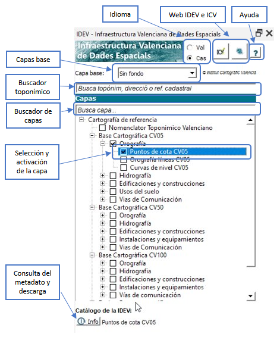
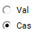
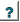
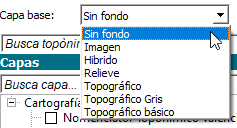
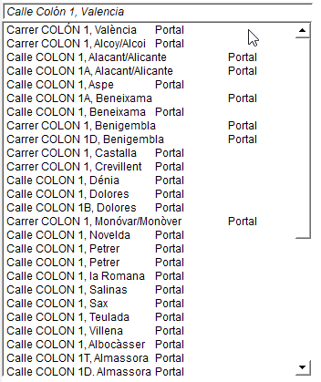
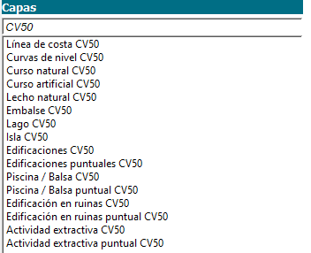
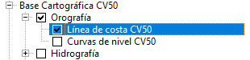
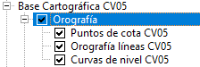
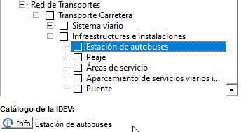

El complemento permite visualizar y explotar diferentes capas de información geográfica provenientes de la IDEV. La interfaz permite al usuario hacer una búsqueda toponímica, búsqueda de capas, carga y descarga de servicios cartográficos y consulta del catálogo de la IDEV para cada capa.
Consta de un panel principal desde el que se acceden a todas las funcionalidades:

Selección del idioma: A través de dos “radio buttons” se escoge el idioma de la interfaz, pudiendo ser castellano o valenciano. Al seleccionar uno u otro se traduce toda la interfaz.

Enlace a la web de la IDEV y del ICV: A través de estos dos botones se accede la web de la “Infraestructura Valenciana de Datos Espaciales” y del “Institut Cartogràfic Valencià”.
Ayuda: A través de este botón se abre el documento de ayuda en el navegador.

Selección
de capas base: A
través del desplegable de “Capa
base”
se selecciona la capa base que se quiera insertar en el proyecto de
QGIS. Las capas seleccionadas se cargarán al final de la tabla
de contenidos en el panel de “Capas”.

Buscador toponímico: Para poder buscar por texto libre un topónimo, una dirección postal o una referencia catastral. Por debajo del texto de entrada se muestra una lista con los resultados a medida que el usuario escribe el texto de búsqueda (se activa a partir de teclear el tercer carácter). Haciendo clic sobre cualquier resultado del listado, se centra el encuadre en la zona del topónimo, parcela catastral o dirección postal.

Buscador de capas: En este cuadro de texto se introduce el patrón de búsqueda para localizar una capa (por su nombre) dentro de la estructura de árbol. Se muestra en un listado las posibles coincidencias y pulsando sobre la capa que se quiera localizar, esta se muestra en su localización dentro del árbol con un sombreado gris.

Selección y activación de las capas: Podemos cargar una capa en el proyecto de QGIS activando el “checkbox” que hay al lado del nombre de la misma. Una vez activado se cargará con el mismo nombre que aparece en el árbol en la parte superior de la tabla de contenidos en el panel de “Capas”. Para descargar la capa es tan sencillo como desactivar el “checkbox”, automáticamente se descargará de la tabla de contenidos.

Se pueden activar o desactivar varias capas a la vez pulsando sobre el nodo padre que contiene un grupo de capas, en la siguiente figura se aprecia como pulsando sobre el nodo “Orografía” se activan las tres capas que cuelgan de dicho nodo.

De igual manera, pulsando sobre el nombre de una capa, vemos como se selecciona (es la capa que tiene el foco y se representa con un contorno azul por debajo). Es necesario que una capa está seleccionada para poder consultar su metadato o información de descarga.
Catálogo de la IDEV: Una vez se ha seleccionado una capa del árbol, se activa el botón de “Info” y se informa al lado del mismo del nombre de la capa que puede ser consultada su información. En la figura vemos como está seleccionada la capa de “Estación de autobuses” y como es posible enlazar con el catálogo de la IDEV pulsando sobre “Info”:

Para poder consultar dicha información no es necesario que la capa esté cargada en el proyecto, únicamente se requiere que esté seleccionada. Se nos presenta en el navegador la interfaz del catálogo de la IDEV con la información referente a dicha capa.